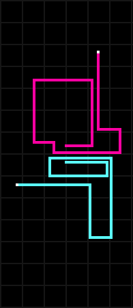
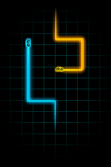

Snake
 Snakes are elongated, limbless, carnivorous reptiles of the suborder Serpentes /sɜːrˈpɛntiːz/.[2] Like all other squamates, snakes are ectothermic, amniote vertebrates covered in overlapping scales. Many species of snakes have skulls with several more joints than their lizard ancestors, enabling them to swallow prey much larger than their heads with their highly mobile jaws. To accommodate their narrow bodies, snakes' paired organs (such as kidneys) appear one in front of the other instead of side by side, and most have only one functional lung. Some species retain a pelvic girdle with a pair of vestigial claws on either side of the cloaca. Lizards have evolved elongate bodies without limbs or with greatly reduced limbs about twenty-five times independently via convergent evolution, leading to many lineages of legless lizards.[3] These resemble snakes, but several common groups of legless lizards have eyelids and external ears, which snakes lack, although this rule is not universal (see Amphisbaenia, Dibamidae, and Pygopodidae).

Hisoka's Nen type is Transmutation, allowing him to change the type or properties of his aura. He most often uses Elastic Love - Bungee Gum (伸縮自在の愛バンジーガム, Banjī Gamu), which gives his aura the properties of both rubber and gum. He also uses Flimsy Lies - Texture Surprise (薄っぺらな嘘ドッキリテクスチャー, Dokkiri Tekusuchā), which allows him to reproduce the texture of his choice on any flat surface; such as making a handkerchief appear to be skin. Hisoka is a popular character with fans, coming in fourth and fifth place in the series' first two popularity polls. (Wikipedia)
Click to read more about Hisoka Morou